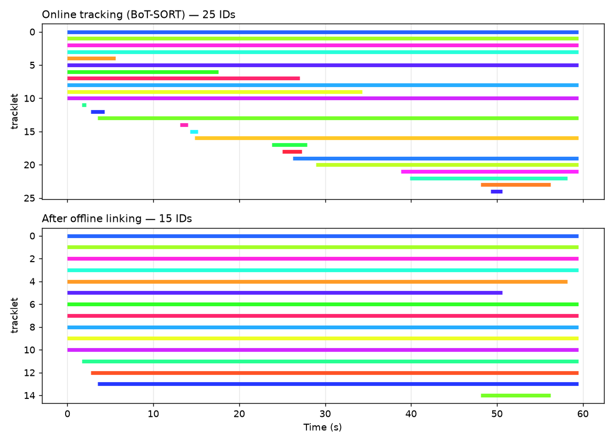

ID Consistency: Offline Tracklet Stitching
If a ReID model is available (models/hanwoo_reid.pt), only the first stitching pass from this lesson is used, and long-term reappearances are handled by the fixed-herd ID assignment in the next lesson. Without a ReID model, the two-pass stitching described here runs as-is.
An online tracker must decide using only the information it has “so far”. When analyzing recorded video, however, we can decide again after seeing the entire video. A barn offers strong constraints — an enclosed space + a fixed camera + the same herd — so re-joining broken pieces (tracklets) is the most effective way to improve ID consistency.

1. Algorithm
- Noise removal: tracklets shorter than 0.5 s (12 frames) are treated as false detections and removed
- Perspective model: the same animal looks smaller near the top of the frame (farther away). Fit the relation between bbox height h and center y over all detections,
h(y) = a·y + b→ normalize distances into “body-size units” - Link candidates: tracklet j starts after tracklet i ends (no time overlap), gap ≤ 20 s, and the end-to-start distance ≤
2.5 + 0.6×gap(s)body lengths - Cost
= 0.5 × (distance / allowed distance) + 0.5 × appearance distance (Bhattacharyya) + 0.15 × (gap / max gap) - Hungarian for optimal 1:1 ‘end’ ↔ ‘start’ linking; only pairs with cost < 0.85 are merged. Repeat until no more links are found (handles chains i→j→k)
- Two-pass stitching: the process above is run twice with different conditions
Pass 1 (short breaks) Pass 2 (long-term reappearance) Max gap 20 s 5 min Allowed distance 2.5 + 0.6×gap body lengths (proportional to time) Fixed 3 body lengths (reappears near the spot where it vanished) Appearance weight / cost threshold 0.5 / 0.85 0.6 / 0.55 (stricter) Targets Passing behind pillars or fences, brief overlaps between cattle Cattle lying down whose detections drop out, clusters in front of the feed bunk - Reassign IDs (1, 2, 3 … in order of appearance) + linear interpolation only for momentary missed detections of 0.5 s or less (drawn as thin boxes in the output video)
Why use bbox height for perspective?
Cattle are nearly the same real size, so changes in on-screen size come mostly from the distance to the camera. Many boxes are truncated by occlusion, which biases a simple mean downward, so we fit robustly using the 75th-percentile height per y-band (mostly unoccluded cattle).

Appearance feature: H-S color histogram
A 2D histogram of hue (H) and saturation (S) in HSV over the central 60% of the bbox (minimizing fence and background). Leaving out value (V) makes it insensitive to shade and lighting changes, and we use the average over the whole tracklet. Hanwoo are similar in color, but differences in coat shade and white markings are captured, and combined with the distance condition this gives enough discriminative power.
2. Code
"""Stage 2: offline ID linking (tracklet stitching).
The online tracker (BoT-SORT) tends to give the same cow several IDs because of fence/pillar
occlusion and cows overlapping each other. A barn is a closed space with a fixed camera, so
re-joining broken tracklets after seeing the whole video (offline) greatly improves ID consistency.
1) drop short tracklets (noise)
2) perspective model h(y) = a*y + b (cows look smaller towards the top of the image)
3) cost matrix: 'end' of tracklet i ↔ 'start' of tracklet j
cost = (1-w)·distance cost (perspective-normalised, allowed radius grows with time) + w·appearance distance (Bhattacharyya)
4) optimal 1:1 links via the Hungarian algorithm → merge only those below the cost threshold (repeat until convergence)
5) renumber IDs (1..N) + linear interpolation of short gaps
"""
from __future__ import annotations
import cv2
import numpy as np
import pandas as pd
from scipy.optimize import linear_sum_assignment
from .config import PipelineConfig
# --------------------------------------------------------------------------- perspective model
def fit_perspective(df: pd.DataFrame):
"""Robustly fit a linear relation between bbox height and image y.
Boxes are often truncated by occlusion, so the 75th-percentile height per y bin is used.
Returns: (a, b) → h(y) = a*y + b [px]
"""
cy = ((df.y1 + df.y2) / 2).to_numpy()
h = (df.y2 - df.y1).to_numpy()
if len(cy) < 20:
return 0.0, float(np.median(h)) if len(h) else 100.0
bins = np.quantile(cy, np.linspace(0, 1, 11))
xs, ys = [], []
for lo, hi in zip(bins[:-1], bins[1:]):
m = (cy >= lo) & (cy <= hi)
if m.sum() >= 5:
xs.append(np.median(cy[m]))
ys.append(np.quantile(h[m], 0.75))
a, b = np.polyfit(xs, ys, 1)
if a <= 0: # degenerate → constant model
a, b = 0.0, float(np.median(ys))
return float(a), float(b)
def body_px(y, persp):
a, b = persp
return np.maximum(a * np.asarray(y) + b, 20.0)
# --------------------------------------------------------------------------- tracklet summary
def _summaries(df: pd.DataFrame, feats: dict):
out = {}
for tid, g in df.groupby("tid"):
g = g.sort_values("frame")
cx = ((g.x1 + g.x2) / 2).to_numpy()
cy = ((g.y1 + g.y2) / 2).to_numpy()
k = min(5, len(g))
hists = [feats[(f, tid)] for f in g.frame.to_numpy() if (f, tid) in feats]
app = np.mean(hists, axis=0).astype(np.float32) if hists else None
out[tid] = dict(
start=int(g.frame.iloc[0]), end=int(g.frame.iloc[-1]),
p_start=np.array([np.median(cx[:k]), np.median(cy[:k])]),
p_end=np.array([np.median(cx[-k:]), np.median(cy[-k:])]),
app=app, n=len(g),
)
return out
def _app_dist(a, b):
if a is None or b is None:
return 0.5
return float(cv2.compareHist(a, b, cv2.HISTCMP_BHATTACHARYYA))
def stitch_stages(cfg: PipelineConfig):
"""(name, max gap s, base radius BL, speed BL/s, appearance weight, max cost) - pass 1: short gaps, pass 2: long-term reappearance"""
return [
("short", cfg.stitch_max_gap_s, cfg.stitch_max_dist_bl, cfg.stitch_speed_bl_s,
cfg.stitch_app_weight, cfg.stitch_max_cost),
("long", cfg.stitch2_max_gap_s, cfg.stitch2_max_dist_bl, cfg.stitch2_speed_bl_s,
cfg.stitch2_app_weight, cfg.stitch2_max_cost),
]
def stitch_tracklets(df: pd.DataFrame, feats: dict, fps: float, cfg: PipelineConfig, persp, stages=("short", "long")):
"""Two-pass (short gaps → long-term reappearance) tracklet merging. Returns: (df, feats, merge log)
With ReID fixed-herd assignment (identity.py) only pass 1 ("short") runs; long-term reappearance is handled by the assignment stage.
"""
log = []
for stage in stitch_stages(cfg):
if stage[0] not in stages:
continue
df, feats, lg = _stitch_stage(df, feats, fps, persp, *stage)
log += lg
return df, feats, log
def _stitch_stage(df, feats, fps, persp, stage, max_gap_s, dist_bl, speed_bl_s, app_w, max_cost):
df = df.copy()
max_gap = int(max_gap_s * fps)
log = []
for _it in range(10): # repeat until no more links
S = _summaries(df, feats)
tids = sorted(S)
n = len(tids)
if n < 2:
break
C = np.full((n, n), 1e3)
for i, ti in enumerate(tids):
si = S[ti]
for j, tj in enumerate(tids):
if i == j:
continue
sj = S[tj]
gap = sj["start"] - si["end"]
if gap <= 0 or gap > max_gap:
continue
ymid = (si["p_end"][1] + sj["p_start"][1]) / 2
d_bl = np.linalg.norm(si["p_end"] - sj["p_start"]) / body_px(ymid, persp)
allowed = dist_bl + speed_bl_s * gap / fps
if d_bl > allowed:
continue
c_dist = d_bl / allowed
c_app = _app_dist(si["app"], sj["app"])
c_gap = 0.15 * gap / max_gap
C[i, j] = (1 - app_w) * c_dist + app_w * c_app + c_gap
rows, cols = linear_sum_assignment(C)
links = [(tids[r], tids[c], C[r, c]) for r, c in zip(rows, cols) if C[r, c] < max_cost]
if not links:
break
# map to root IDs union-find style so chains (i→j→k) are handled at once
parent = {}
for a, b, c in links:
parent[b] = a
log.append(dict(stage=stage, src=int(b), dst=int(a), cost=round(float(c), 3)))
def root(t):
while t in parent:
t = parent[t]
return t
new_tid = df.tid.map(lambda t: root(t))
# update feats keys too
feats = {(f, root(t)): v for (f, t), v in feats.items()}
df["tid"] = new_tid
# guard against duplicates in the same frame (shouldn't happen)
df = df.sort_values("conf", ascending=False).drop_duplicates(["frame", "tid"]).sort_values(["frame", "tid"])
return df.reset_index(drop=True), feats, log
def relabel_and_interpolate(df: pd.DataFrame, fps: float, cfg: PipelineConfig):
"""Renumber IDs 1..N in order of appearance and linearly interpolate short gaps."""
first = df.groupby("tid").agg(f0=("frame", "min"), x=("x1", "first")).sort_values(["f0", "x"])
mapping = {old: i + 1 for i, old in enumerate(first.index)}
df = df.copy()
df["tid"] = df.tid.map(mapping)
df["interp"] = 0
max_gap = int(cfg.interp_max_gap_s * fps)
parts = []
for tid, g in df.groupby("tid"):
g = g.set_index("frame").sort_index()
full = np.arange(g.index.min(), g.index.max() + 1)
missing = np.setdiff1d(full, g.index)
if len(missing):
gg = g.reindex(full)
# compute gap length → interpolate only gaps <= max_gap
isna = gg.x1.isna().to_numpy()
run_id = np.cumsum(~isna)
run_len = pd.Series(isna).groupby(run_id).transform("sum").to_numpy()
fill = isna & (run_len <= max_gap)
for c in ["x1", "y1", "x2", "y2"]:
gg[c] = gg[c].interpolate(limit_area="inside")
gg.loc[isna, "interp"] = 1
gg.loc[isna, "conf"] = 0.0
gg = gg[~isna | fill]
g = gg
g["tid"] = tid
parts.append(g.reset_index().rename(columns={"index": "frame"}))
out = pd.concat(parts, ignore_index=True).sort_values(["frame", "tid"]).reset_index(drop=True)
out["frame"] = out.frame.astype(int)
out["interp"] = out.interp.astype(int)
return out, mapping
def clean_short(df: pd.DataFrame, cfg: PipelineConfig):
cnt = df.groupby("tid").frame.transform("count")
return df[cnt >= cfg.min_track_frames].copy()3. Parameters (config.py)
# ---- Offline ID linking (tracklet stitching) ----
stitch_max_gap_s: float = 20.0 # max allowed gap duration
stitch_max_dist_bl: float = 2.5 # max distance between break points (body lengths, grows with time)
stitch_speed_bl_s: float = 0.6 # max speed possible during the gap (body lengths/s)
stitch_app_weight: float = 0.5 # appearance similarity weight
stitch_max_cost: float = 0.85
# 2nd pass: cows that vanish for a long time (up to 5 min) and reappear near the same spot (lying, behind a pillar, in a cluster)
stitch2_max_gap_s: float = 300.0
stitch2_max_dist_bl: float = 3.0 # fixed radius regardless of time
stitch2_speed_bl_s: float = 0.0
stitch2_app_weight: float = 0.6 # higher appearance weight
stitch2_max_cost: float = 0.55 # stricter threshold
interp_max_gap_s: float = 0.5 # max interpolation (display-only) gap - fills only momentary missed detections. Longer gapsoutputs/<video>/cache_track.npz. With python run_activity.py E:/Video/cow --reuse you can recompute only stitching and activity in a few seconds without rerunning YOLO.stitch_max_cost or raise stitch_app_weight; if one animal is still split into several IDs, increase stitch_max_gap_s and stitch_max_dist_bl.